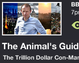

We Watch
- 

Despite our digital leanings, like most people, we spend a good portion of our time in the studio discussing television: what was on last night, and what we're looking forward to tonight. Often, however, we find ourselves missing programmes we intended to watch, and consequently missing out on the conversations the next day. Whilst it's great to be able to watch TV via catch-up, it's also great to see it 'live'.
We Watch was designed as a social TV service to help people manage their planned TV watching. It focuses very narrow on a specific window of time, 'this evening', and specific types of programme, non-repeated irregular drama, factual and comedy show.
From the simplified schedule view, users can choose to 'watch' a programme, setting a reminder to themselves to tune in at the right time.
The app is also social, and lets friends see what each other are intending to watch. In this way, groups of friends can plan their TV watching together, allowing for conversations the next day.